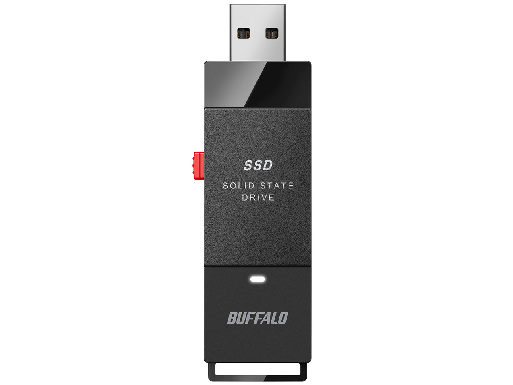
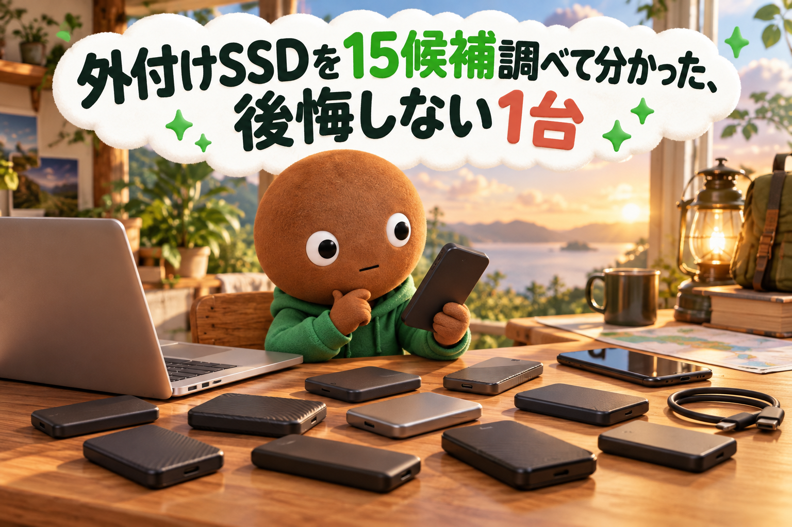
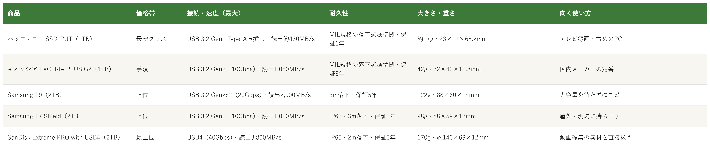

Amazonで見る外付けSSDを選べず、速度や耐久性で買って後悔したくない人へ
その外付けSSD、
速度と耐久性で選んでいますか？
接続方式・速度・耐久性・保証まで、外付けSSD15候補を調査。用途と方式が重複しない5商品を比較しました。
自分に合う外付けSSDを探す
この記事はAmazonアソシエイト・プログラムの参加者として、紹介料を得る場合があります（PR）。仕様は調査時点の情報です。
15候補から、使い方の違う5商品に絞りました。まずは気になる1つへ。向いている人・向いていない人と、低評価レビューもまとめています。
15候補を調査
5商品に厳選
低評価レビューも確認済み
結論から先に言うと：
接続方式・速度・耐久性、何を優先するかで1つを。
横にスワイプして、5商品を見比べる
選び方の基準は3つ
調べてわかったのは、基準は3つでした。
1つ目は「接続方式と速度」。今回の5商品の最大読み出し速度は、バッファローが約430MB/s、キオクシアとSamsung T7 Shieldが1,050MB/s、Samsung T9が2,000MB/s、SanDiskが3,800MB/sです。ただし最大速度は、パソコン側のポートとケーブルが同じ規格に対応しているときの値です。Samsung T9は、USB 3.2 Gen2x2に対応した環境でのみ最大速度が出ると商品ページに書いています。
2つ目は「耐久性」。防塵・防水は、Samsung T7 ShieldとSanDiskがIP65で、Samsung T9は記載を確認できませんでした。落下は、Samsungの2商品が3m、SanDiskが2mまで耐えるとされています。バッファローとキオクシアは、米国MIL規格の落下試験に準拠しています。
3つ目は「保証と大きさ」。保証は、バッファローが1年、キオクシアとSamsung T7 Shieldが3年、Samsung T9とSanDiskが5年です。重さは、バッファローの約17gからSanDiskの170gまで、約10倍の差があります。
比較表

価格帯・接続と速度・耐久性・大きさと重さ・向く使い方の比較（価格帯は、調査時点のAmazon出品価格の順に付けた目安です。SSDの価格は変動が大きく、容量も商品ごとに違います（バッファロー・キオクシアは1TB、Samsung 2商品とSanDiskは2TB）。価格が近い商品は同じ区分にしています）
バッファロー SSD-PUT
- 最安クラス
- USB 3.2 Gen1 Type-A直挿し・読み出し約430MB/s
- 約17g、MIL規格の落下試験準拠、保証1年
キオクシア EXCERIA PLUS G2
- 手頃
- USB 3.2 Gen2（10Gbps）・読み出し最大1,050MB/s
- 42g、MIL規格の落下試験準拠、保証3年
Samsung T9
- 上位
- USB 3.2 Gen2x2（20Gbps）・読み出し最大2,000MB/s
- 122g、3m落下、保証5年
Samsung T7 Shield
- 上位
- USB 3.2 Gen2（10Gbps）・読み出し最大1,050MB/s
- 98g、IP65・3m落下、保証3年
SanDisk Extreme PRO with USB4
- 最上位
- USB4（40Gbps）・読み出し最大3,800MB/s
- 170g、IP65・2m落下、保証5年
向いてる人
- ケーブルなしで、テレビやパソコンに直接挿したい人
- 国内メーカーのSSDを、まず手頃に試したい人
向いてない人
- 大容量のデータを速く転送したい人（読み出しは約430MB/sで、5商品の中で最も遅い）
- 保証の長さを重視する人（保証は1年間）
- USB Type-C機器に直接つなぎたい人（端子はType-Aのみ）
選ぶ決め手ケーブルなしでテレビやパソコンに挿すだけ。速さより手軽さを優先するなら、一番ハードルの低い選択です。
低評価レビューを調べました
Amazonのレビューには、★4で、テレビにつなぐと本体が少し大きく周りに干渉したため、短いUSBケーブルで接続したという声がありました。別の★4には、大量のデータをHDDへ転送している途中で動作が不安定になったという声もあります（数か月つなぎっぱなしにしていたことも影響したかもしれない、とも書かれていました）。
参考：Amazon商品ページのレビュー（★4）
バッファローのSSD-PUTは、
ケーブルなしで挿して使いたい人に
最適な1台です。
読み出しは約430MB/sで、
USB 3.2 Gen1のType-A端子に対応します。
重さは約17g、
保証期間は1年間です。
向いてる人
- 国内メーカーの定番を、迷わず選びたい人
- パソコンにもType-Cのスマホにも、ケーブルでつなぎたい人
向いてない人
- 防水・防塵のSSDがほしい人（今回確認した公式ページに防水・防塵の記載はありません）
- 20Gbps以上の速さがほしい人（最大1,050MB/sで、Samsung T9の約半分）
選ぶ決め手特別な尖りはないぶん、迷ったときに外しにくい国内メーカーの標準です。
低評価レビューを調べました
Amazonのレビューには、★4で、ケーブルが2本付属するので、1本にまとまっているか、変換アダプタ形式なら収納しやすいという声がありました。同じレビューには、iPhoneから千件ほどのデータをコピーした際は待ち時間があったという感想もあります。別の★4（Amazon限定モデルのページ）には、使用中にかなり発熱するのが少し心配だが、他のメーカーのSSDも同じように熱くなるという声がありました。今回確認できた範囲では、★1〜★2の指摘は見当たりませんでした。
参考：Amazon商品ページのレビュー（★4）
キオクシアのEXCERIA PLUS G2は、
国内メーカーの定番を選びたい人に
最適な1台です。
読み出しは最大1,050MB/s、
Type-C to CとType-C to Aのケーブルが付属します。
重さは42g、
保証は購入から3年間です。
向いてる人
- 数十GBの動画や写真を、よく移す人
- USB 3.2 Gen2x2（20Gbps）に対応したパソコンを使っている人
向いてない人
- 20Gbps非対応のパソコンで使う人（最大速度は出ません）
- 水や砂ぼこりに強いものがほしい人（今回確認した公式発表と商品ページに、防水・防塵の記載はありません）
- 軽さを優先する人（122gで、5商品の中でSanDiskに次いで重い）
選ぶ決め手5商品の中で2番目に速く、3m落下と5年保証も備えています。コピー待ちを減らしたい人が最初に検討する1台です。
低評価レビューを調べました
Amazonのレビューには、★1で、購入して1年ほどで接続不良が頻発し、書き込み中にスマートフォンとの接続が切れてファイル転送が失敗するようになったという投稿がありました（ケーブルの交換やソフトの更新でも直らなかったとのこと）。別の★1には、購入時から接続不良があり、保存中のデータが壊れたという投稿もあります（1TBモデル）。
参考：Amazon商品ページのレビュー（★1）
SamsungのT9は、
大容量のデータを待たずに移したい人に
最適な1台です。
読み出しは最大2,000MB/s、
USB 3.2 Gen2x2（20Gbps）に対応します。
3mの落下に耐える設計で、
保証は5年間です。
向いてる人
- 屋外撮影やキャンプ、現場などに持ち出す人
- 水や砂ぼこりが気になる場所で使う人
向いてない人
- 手頃な価格で試したい人（5商品の中で上位の価格帯）
- 軽さを優先する人（98gで、バッファロー・キオクシアより重い）
選ぶ決め手防水・防塵（IP65）と3mの落下耐性をそろえて明記しているのはこの1台だけ。持ち出す場所を選ばない安心を買うなら、ここです。
低評価レビューを調べました
Amazonのレビューには、★3で、使い始めて1年弱でアクセス速度が大きく落ち、Steamのゲームで使っていて困ったという投稿がありました（アップデートで多少よくなったが、購入時の1/3ほどまでしか戻らなかったとのこと。4TBモデルの投稿です）。
参考：Amazon商品ページのレビュー（★3）
SamsungのT7 Shieldは、
水や落下が心配な場所に持ち出す人に
最適な1台です。
IP65の防塵・防水で、
3mの高さからの落下に耐える設計です。
重さは98g、
保証は3年間の限定保証です。
向いてる人
- 重い動画素材を、ドライブから直接編集する人
- USB4またはThunderbolt 4に対応したパソコンを使っている人
向いてない人
- 手頃な価格で試したい人（5商品の中で最上位の価格帯で、1TBの設定もない）
- USB4非対応のパソコンで使う人（最大速度はUSB4で接続したときの値）
- 軽さを優先する人（170gで、5商品の中で最も重い）
選ぶ決め手最大3,800MB/sと5年保証、IP65を兼ねた最上位です。速さに投資する理由がはっきりしている人向けです。
低評価レビューを調べました
Amazonのレビューには、★1で、コピーを始めるとマウントが解除される不良品だったので返品したという投稿がありました（4TBモデル・1件）。★4には、ハードウェア暗号化に対応していないのが残念という声もあります。
参考：Amazon商品ページのレビュー（★1、★4）
SanDiskのExtreme PRO with USB4は、
動画編集の素材を最速クラスで扱いたい人に
最適な1台です。
読み出しは最大3,800MB/s、
USB4（40Gbps）に対応します。
IP65の防水・防滴で、
保証は5年間です。
15候補をどう絞った？ 調査の経緯を見る
外付けSSDは、接続方式・速度・耐久性・保証の違いが大きく、「速いと思って買ったのに速度が出なかった」「持ち出したら壊れないか不安」というギャップが起きやすい道具です。正直どれを選べばいいのか迷います。
なので今回、持ち運べるポータブルの外付けSSDの仕様を調べて比較しました。各商品ごとに、向いてる人・向いてない人も調べているので、自分に合う1つを探してみてください。外付けHDDや内蔵SSDは対象にしていません。
15候補から5つに絞り込みました
メーカー公式ページと、Amazonの商品ページを中心に調べました。今回はバッファロー SSD-PUT・キオクシア EXCERIA PLUS G2・Samsung T9・Samsung T7 Shield・SanDisk Extreme PRO with USB4・Crucial X10 Pro・トランセンド ESD310C・トランセンド ESD265C・エレコム ESD-EMA・エレコム ESD-EH・Samsung T7・Crucial X9・SanDisk Extreme Portable SSD V2・WD_BLACK P40・Biwin PD450の15候補を調べ、用途と接続方式が重複しないよう5商品に絞りました。
採用したのはバッファロー SSD-PUT（スティック型）、キオクシア EXCERIA PLUS G2（国内メーカーの定番）、Samsung T9（20Gbps）、Samsung T7 Shield（防水・耐落下）、SanDisk Extreme PRO with USB4（40Gbps）の5つです。
見送ったのは、採用した商品と用途が重なるものです。トランセンド ESD310C（スティック型・Type-A/C両対応・読み出し最大1,050MB/s・保証5年）は、速度と保証年数ではバッファローより上ですが、調査時点の価格帯が上で、スティック型の枠は、テレビ録画対応を製品名に明記するバッファローにしました。Biwin PD450（約430MB/s・保証3年）はバッファローと同じ速度帯で、保証年数はBiwinのほうが長いため、保証を重視する人は候補になります。エレコム ESD-EMA（約500MB/s・スライド式）も同じ「挿して使う」枠で、調査時点の価格帯が上のため見送りました。
トランセンド ESD265C（Type-C専用・最大1,050MB/s・保証5年）、エレコム ESD-EH（最大1,000MB/s）、Samsung T7（最大1,050MB/s・2m落下）は、キオクシアと同じ10Gbpsのケース型で重なります。ESD265Cは保証が長い一方、Amazonのレビュー件数はキオクシアのほうが大きく上回り、ESD-EHはレビュー件数が12件と少なかったため、国内メーカーでケーブル2本付きのキオクシアにしました。Samsung T7は、防水・3m落下に対応するT7 Shieldが上位版にあたります。
Crucial X10 Pro（最大2,100MB/s・IP55・保証5年）は、最初は採用候補でしたが外しました。Micronが2025年12月に、Crucialの消費者向け事業から撤退すると発表しており、消費者向けの出荷は2026年2月までと案内されています（保証とサポートは、既存の製品について継続するとされています）。調べた時点でも、AmazonのCrucial X10 Pro（Amazon.co.jp限定版）は在庫切れで、買える出品はAmazon Global Storeのみでした。同じブランドのCrucial X9（最大1,050MB/s・保証3年）も、同じ理由で見送りました。
20Gbps帯では、同じ2,000MB/sクラスのWD_BLACK P40（RGB LED付き・保証5年）はゲーム向けの設計で、用途がSamsung T9と重なります。T9は3m落下と5年保証を明記し、Amazon.co.jpの販売で在庫もあったため選びました。SanDisk Extreme Portable SSD V2（最大1,050MB/s・IP65）は、IP65の防水・防塵がT7 Shieldと重なります。落下に耐える高さは、T7 Shieldが3mと明記していますが、V2は今回確認した商品ページに記載がなく、T7 Shieldにしました。
低評価の商品も見ました
5商品それぞれについて、Amazon商品ページに載っている★1〜★4のレビューを確認しました。個別レビューの真偽までは検証できないため、確認できた範囲の傾向としてまとめています。WebSearchでは、SanDisk Extreme PRO with USB4やSamsung T7 Shieldの発熱・速度低下を実測した検証や、各商品の低評価を独立して検証した記事までは見つかりませんでした。
確認できた指摘は、バッファローのテレビ接続時の干渉と、大量データ転送中の動作の不安定さ、キオクシアのケーブル2本の収納と発熱、Samsung T9の接続不良（★1が2件）、Samsung T7 Shieldの速度低下、SanDiskの1件の不良報告とハードウェア暗号化への未対応です。
調べてみて驚いたこと
調査中、Crucialが消費者向けSSD事業から撤退すると発表していたことが分かりました（Micronの2025年12月の発表）。人気のあった20Gbps対応のCrucial X10 Proは、調べた時点でAmazon.co.jp限定版が在庫切れで、買えるのはAmazon Global Storeの出品だけでした。性能や評価だけでなく、「今から買える商品か」「保証とサポートが続くか」も選ぶ基準になります。
また、Amazonのレビューには、半導体価格の高騰で外付けSSDの値段が上がったという声が複数ありました（買い直そうとしたら値段が倍になっていた、4倍近くになっていた、という投稿）。そのため、この記事では価格帯を相対的な目安で示し、金額は載せていません。購入前に、Amazonの販売元と価格を確認してください。
さらに、5商品の最大読み出し速度は、約430MB/sから3,800MB/sまで約9倍の差があります。ただし、この最大速度は、パソコン側のポートとケーブルが対応しているときの値です。
つまり、速さだけで選ぶのではなく、手持ちのパソコンのポートと、持ち出す場所で選ぶのが大事だと分かりました。
迷ったらこれ
ここまで読んでも迷ったら、国内メーカーで、ケーブルが2本付き、保証が3年のキオクシア EXCERIA PLUS G2が、一番外しにくいと考えます。手持ちのパソコンが20Gbps対応なら、Samsung T9も選択肢です。
Amazonで見る→よくある質問
Q. 最大速度が出ないのはなぜですか。
A. 最大速度は、パソコン側のポートとケーブルが同じ規格に対応しているときの値です。Samsung T9は、最大2,000MB/sにはUSB 3.2 Gen2x2対応の環境が必要と商品ページに書いています。SanDiskの3,800MB/sも、USB4で接続したときの値です。
Q. iPhoneで使えますか。
A. キオクシアのAmazon商品ページには「Type-C搭載iPhone対応」、Samsung T9とT7 Shieldの商品ページには「iPhone 15シリーズ動作確認済み」と書かれています。バッファローはType-A端子のみで、直接はつなげません。SanDiskは、今回の調査ではiPhoneへの対応を確認できませんでした。
Q. PS5やテレビで使えますか。
A. バッファローはテレビ録画対応を製品名に明記しています。キオクシアの商品ページには、PS5での動作確認が書かれています。Samsung T7 Shieldは、商品名にPS4・PS5と書かれています。接続できる条件は機器ごとに違うため、購入前に各メーカーの対応情報で確認してください。
Q. IP65の防水とは、どのくらいですか。
A. SanDiskの公式ページでは、IP65は3分間の水流（30kPa）への耐久性を検証したものと説明されています。水没しても使えるという意味ではありません。また、Samsungの公式発表には、落下による破損は保証の対象外という注記があります。
Q. データの暗号化はできますか。
A. バッファローはソフトウェア方式（AES256bit）、Samsung T9とT7 ShieldはAES256bitのハードウェア暗号化に対応しています。キオクシアは、パスワード保護機能があり、Amazonの商品ページではWindowsのみ対応と書かれています。SanDiskは、Amazonのレビューにハードウェア暗号化に未対応という指摘があり、公式ページでは今回確認できませんでした。
こんな記事も書いてます
ミートボーの調査部屋で他の記事も見る（全本）


出典
- バッファロー SSD-PUT1.0U3-BKA 公式：buffalo.jp
- キオクシア EXCERIA PLUS G2 公式：kioxia.com
- Samsung T9 公式発表：news.samsung.com
- Micron Crucial事業撤退の発表（StorageReviewの報道）：storagereview.com
- Samsung T7 Shield 公式発表：news.samsung.com
- SanDisk Extreme PRO with USB4 公式：sandisk.com
- Amazon.co.jp バッファロー SSD-PUT：amazon.co.jp
- Amazon.co.jp キオクシア EXCERIA PLUS G2：amazon.co.jp
- Amazon.co.jp Samsung T9：amazon.co.jp
- Amazon.co.jp Samsung T7 Shield：amazon.co.jp
- Amazon.co.jp SanDisk Extreme PRO with USB4：amazon.co.jp